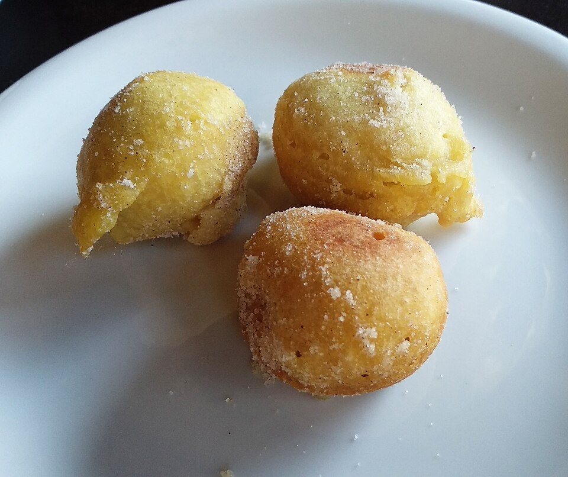

Doces · Outros doces
Bolinho de chuva

Ingredientes
- 3 xícaras de farinha de trigo
- 2 ovos
- 1 xícara de leite
- 1 xícara de açúcar
- 1 pitada de sal
- 3 colheres (chá) de fermento em pó
- Óleo para fritar
- Açúcar e canela para polvilhar
Modo de preparo
- Misture farinha, ovos, leite, açúcar, sal e fermento até massa homogênea.
- Frite colheradas pequenas em óleo quente (molhe a colher no óleo para soltar a massa).
- Polvilhe com açúcar e canela.
Observação
Fonte: ChefOnline / Marília de Melo Silveira.